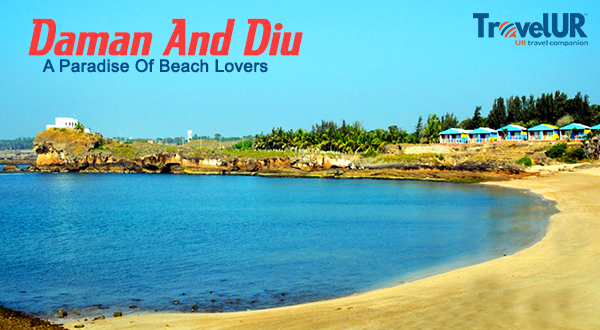
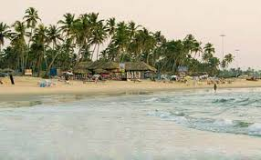
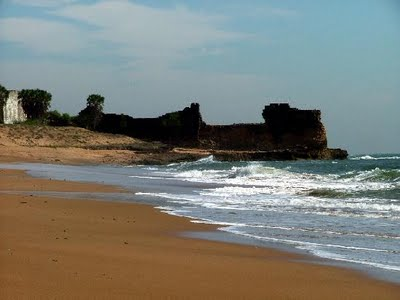
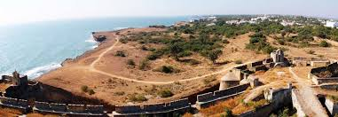

Daman and Diu
Daman and Diu Portuguese is a union territory in Western India. With an area of 112 km2, it is the smallest federal division of India on the mainland. The territory comprises two distinct regions—Daman and Diu—that are geographically separated by the Gulf of Khambhat. The state of Gujarat and the Arabian Sea border the territory. A Portuguese colony since the 1500s, the territories were annexed by India in 1961.

History
For over 450 years, the coastal enclaves of Daman (Portuguese: Damão) and Diu on the Arabian Sea coast were part of Portuguese India, along with Goa and Dadra and Nagar Haveli. Goa, Daman and Diu were incorporated into the Republic of India on December 19, 1961, by military conquest. Portugal did not recognise the Indian annexation of these territories until the Carnation Revolution of 1974.
The territory of Goa, Daman and Diu was administered as a single union territory until 1987, when Goa was granted statehood, leaving Daman and Diu as a separate union territory. Each enclave constitutes one of the union territory's two districts. Daman and Diu are approximately 650 kilometres away from each other by road.
.

Geography
Daman and Diu geography is actually the geography of the districts of Daman and Diu, which make up the union territory. The district of Daman is situated on the Indian west coast. This place is bordered by a river called Kalem towards the south, a river called Bhagwan towards the north, the Arabian Sea towards the west and the district of Valsad towards the east.
The Damanganga river divides the Daman district into two parts. Three rivers, namely, Bhagwan River, Damanganga River and Kalem River pass through this district.
Daman has a moderate climate round the year because of its closeness to the sea. The average rainfall received by the place throughout the year is 1687 mm. The average minimum temperature of the place is 11°C and the average maximum temperature is 37°C. The ideal time to visit this district of Daman and Diu is from September to April.
The district of Diu is located at a small distance away from the Kathiawar coast close to the Veraval Port in the state of Gujarat.
It is located between 71°-00'-2'' and 70°-52'-2'' East longitudes and 20°-44'-3'' and 20°-42'-0'' North latitudes. The altitude of the district is 6 meters above the sea level.
The mainland of the district is linked with two bridges. Diu is bordered by Amreli and Junagadh towards the north and the Arabian Sea towards the other three sides.
The climate of Diu is pleasant throughout the year. The rainy season stretches between June and September. The summer temperature varies from 38°C to 15° C. The maximum rainfall is 63.5 cm. The winter temperature varies between 20° and 25° C.

Tourism
Daman and Diu house various buildings and monuments with Portuguese-styled architecture.
The nearest railway junction is Veraval, which is 90 km from Diu. Major cities like Mumbai, Ahmedabad, Pune, Jabalpur (Madhya Pradesh), Dwarka and Thiruvananthapuram are directly connected to Veraval Railway Station. Delwada is 8 km from Diu.
Jain Temple: This 18th-century temple is situated in northern region of Nani Daman Fort and is dedicated to Mahavir Swami. The temple is built with white marble and has beautiful carvings. The walls have an elegant glass cover with 18th-century murals that represents the life of Mahavir Swami.[11]
Nani Daman Fort
Diu Fort
Fort of Moti Daman
St. Thomas Church
Nadia Caves
St. Paul's Church
Tower of Silence
Daman Freedom Memorial
Fortim do Mar
Portuguese Fort
Se Cathedral
Beaches
Nagoa Beach is in Diu.
Ghoghla Beach is the largest beach on the island of Diu.
Chakratirth Beach is in Diu.
Gomtimata Beach is in Diu.
Jallandhar Beach has a shrine. The beach is named after Jallandhar, a mythological demon who was said to have been killed by Lord Krishna.

Administration
According to the Constitution of India, Administration of Daman and Diu is carried out by an Administrator, appointed by the President of India as an agent of the President, not a head of state/government or a governor. Previously, this post was held by Shri B. S. Bhalla, IAS officer (1990 batch). He was assisted by a number of other officers in carrying out his duty. Currently, this post is held by Praful Khoda Patel.
Districts
Diu District, an area of 40 km2. The main settlement is the town of Diu.
Daman District, an area of 28 sq mi or 72 km2. The main settlement is the city of Daman.
